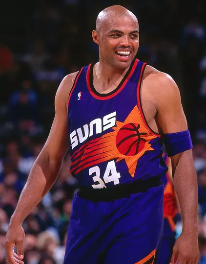
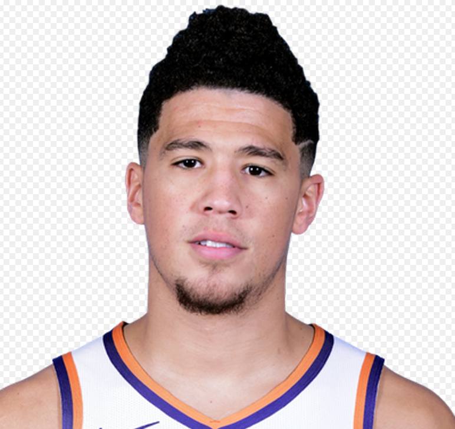

Suns

The Phoenix Suns are an American professional basketball team based in Phoenix, Arizona. The Suns compete in the National Basketball Association (NBA), as a member of the league's Western Conference Pacific Division. The Suns are the only team in their division not based in California. The Suns play their home games at the Phoenix Suns Arena. The franchise began play in 1968 as an expansion team, and their early years were shrouded in mediocrity, but their fortunes changed in the 1970s, where, after partnering long-term guard Dick Van Arsdale and center Alvan Adams with Paul Westphal, the Suns reached the 1976 NBA Finals, in what is considered to be one of the biggest upsets in NBA history. However, after failing to capture a championship, the Suns would rebuild around Walter Davis for a majority of the 1980s, until the acquisition of Kevin Johnson in 1988. Under Johnson, and after trading for perennial NBA All-Star Charles Barkley, and combined with the output of Tom Chambers and Dan Majerle, the Suns reached the playoffs for a franchise-record thirteen consecutive appearances and remained a regular title contender throughout the 1990s, and reached the 1993 NBA Finals. However, the team would again fail to win a championship, and entered into another period of mediocrity until the early part of the 2000s. In 2004, the Suns reacquired Steve Nash, and immediately returned into playoff contention. With Nash, Shawn Marion, and Amar'e Stoudemire, and under head coach Mike D'Antoni, the Suns became renowned worldwide for their quick, dynamic offense, which led them to tie a franchise record in wins in the 2004–05 season. Two more top two Conference placements followed, but the Suns again failed to attain an NBA championship, and were forced into another rebuild. The Suns own the NBA's seventh-best all-time winning percentage, and have the second highest winning percentage of any teams to have never won an NBA championship. 10 Hall of Famers have played for Phoenix, while two Suns, Barkley and Nash, have won the NBA Most Valuable Player (MVP) award while playing for the team. The Suns are the only one of Arizona's major professional sports franchises which uses "Phoenix" instead of "Arizona" as its geographical identifier. The National Football League's Arizona Cardinals and National Hockey League's Arizona Coyotes used "Phoenix" as their geographical identifier when they moved from other locations, but later changed to "Arizona". Major League Baseball's Arizona Diamondbacks have always used the state as its identifier.
Charles Wade Barkley (born February 20, 1963) is an American former professional basketball player who is an analyst on Inside the NBA. Nicknamed "Sir Charles", "the Round Mound of Rebound", and "the Chuckster", Barkley established himself as one of the National Basketball Association's greatest and most dominant power forwards of all time. Barkley was an 11-time NBA All-Star, an 11-time member of the All-NBA Team, and the 1993 NBA Most Valuable Player (MVP). An All-American power forward at Auburn University, he was drafted as a junior by the Philadelphia 76ers with the 5th pick of the 1984 NBA draft. Barkley was selected as a part of the NBA All-Rookie First Team in 1985. In the 1986–87 season, Barkley led the league with the highest rebounding average and earned his first NBA rebounding title. He was selected as the NBA All-Star Game MVP in 1991. In 1993 with the Phoenix Suns, he was voted the league's Most Valuable Player, and during the NBA's 50th anniversary, named one of the 50 Greatest Players in NBA History. He competed in the 1992 and 1996 Olympic Games and won two gold medals as a member of the United States' "Dream Team". Barkley is a two-time inductee into the Naismith Memorial Basketball Hall of Fame, being inducted in 2006 for his individual career, and in 2010 as a member of the "Dream Team". Barkley was popular with the fans and media and made the NBA's All-Interview Team for his last 13 seasons in the league. He was frequently involved in on- and off-court fights and sometimes stirred national controversy, as in March 1991 when he spat on a young girl while attempting to spit at a heckler, and as in 1993 when he declared that sports figures should not be considered role models. Though shorter than the typical power forward, Barkley used his strength and aggressiveness to become one of the NBA's most dominant rebounders. He was a versatile player who had the ability to score, create plays, and defend. In 2000, he retired as the fourth player in NBA history to achieve 20,000 points, 10,000 rebounds and 4,000 assists. Since retiring as a player, Barkley has had a successful career as an NBA analyst. He works with Turner Network Television (TNT) alongside of Shaquille O'Neal, Kenny Smith, and Ernie Johnson as a studio pundit for its coverage of NBA games. In addition, Barkley has written several books and has shown an interest in politics. In October 2008, he announced that he would run for Governor of Alabama in 2014, but he changed his mind in 2010.
Devin Armani Booker (born October 30, 1996) is an American professional basketball player for the Phoenix Suns of the National Basketball Association (NBA). He attended Moss Point High School in Moss Point, Mississippi and played in the 2014 McDonald's All-American Game, before spending one season playing college basketball for the University of Kentucky. He was drafted 13th overall in the 2015 NBA draft by the Phoenix Suns. On March 24, 2017, Booker became the youngest player to score over 60 points in a game, finishing with 70 against the Boston Celtics. In March 2019, at 22 years old, Booker became the youngest player in NBA history with consecutive 50-point games. His father, Melvin Booker, played for three teams in the NBA. Booker received his first NBA All-Star selection in 2020.